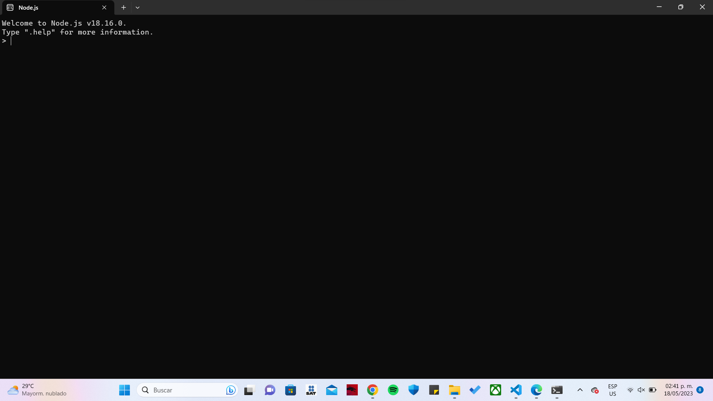

| Contenido | |
|---|---|
| Proposito del software | Proceso de instalacion |
| Video De Instalacion (auxiliar) | Evidencia de Instalacion |
El propósito principal de Node.js es permitir la ejecución de código JavaScript en el lado del servidor. A diferencia del entorno de ejecución JavaScript tradicional, que se ejecuta en el navegador web, Node.js está diseñado para ejecutarse fuera del navegador, en un entorno de servidor. Node.js proporciona un entorno de tiempo de ejecución que permite a los desarrolladores construir aplicaciones de servidor altamente escalables y de alto rendimiento utilizando JavaScript. Esto significa que los desarrolladores pueden utilizar un único lenguaje de programación, JavaScript, tanto en el lado del cliente como en el lado del servidor, lo que puede simplificar el desarrollo y el mantenimiento del código.
Para instalar Node JS, deberas:
En este video podras observar con mas detalle como se instala Node JS
Esta es mi evidencia de instalacion
